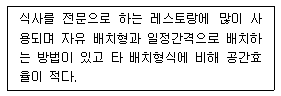

실내건축기사(구) (2004-09-05 기출문제)
1과목: 실내디자인론
1. 주택의 침실계획에 대한 다음 설명 중 옳지 않은 것은?
- 침실의 독립성 확보에 있어서 출입문과 창문의 위치는 매우 중요하다.
- 문이 두 개인 경우 분산되는 것이 가구배치와 독립성 확보를 위해 보다 효과적이다.
- 입구에서 옷장 등 수납공간까지의 동선을 짧게 하는 것이 좋다.
- 문이 옷을 갈아입는 공간과 똑바로 일치되지 않는 것이 프라이버시 확보를 위해 유리하다.
(정답률: 69%)

2. 리듬의 원리와 가장 관계가 먼 것은?
- 반복
- 점이
- 대립
- 스케일
(정답률: 90%)
3. 조명의 연출기법이 아닌 것은?
- 월워싱(wall washing)기법
- 스파클(sparkle)기법
- 패키지 유닛(package unit)기법
- 글레이징(glazing)기법
(정답률: 88%)
4. 실내디자인의 구성원리 중 반복, 점층, 변이 등의 규칙적인 요소들의 반복으로 디자인에 시각적인 질서를 부여하는 통제된 운동 감각은?
- 비례
- 리듬
- 균형
- 통일
(정답률: 75%)
5. 레스토랑의 의자와 테이블 배치유형에 관한 설명이다. 어느 유형을 말하는가?

- 세로배치형
- 가로배치형
- 부스(booth)형
- 점재(點在)형
(정답률: 50%)
6. 다음 중 주택의 부엌계획에 관한 설명으로 옳지 않은 것은?
- 부엌의 작업대 배치는 준비대 - 개수대 - 조리대 - 가열대 - 배선대의 순서로 한다.
- 부엌은 될 수 있는 한 밝게 한다.
- 벽, 천장, 바닥의 내장재를 방습, 내화, 내수성 및 청결관리가 용이한 재료로 선택하도록 한다.
- 시대적 추세를 감안하여 다양한 기능보다는 취사라는 단일기능을 충족시키는데 주안점을 두어 계획한다.
(정답률: 72%)
7. 다음 중 디자인에 있어 대중적이거나 저속하다는 의미를 나타내는 말은?
- 퓨전(Fusion)
- 미니멀(Mininal)
- 데지그나레(Designare)
- 키치(Kitsch)
(정답률: 50%)
8. 실내계획 중 치수계획에 대한 설명으로 옳지 않은 것은?
- 치수계획은 생활과 물품, 공간과의 적정한 상호관계를 만족시키는 치수체계를 구하는 과정이다.
- 복도의 폭과 넓이는 통행인의 수와 관계없이 넓을수록 좋다.
- 최적치수를 구하는 방법으로는 α 를 조정치수라 할때, 최소치 +α , 최대치 -α , 목표치 ±α 가 있다.
- 치수계획은 인간의 심리적, 정서적 반응을 유발시킨다.
(정답률: 95%)
9. 조명설계의 현휘현상 방지를 위한 방법으로 옳은 것은?
- 광원의 휘도를 높게 한다.
- 광원을 사람의 시선으로부터 가까이 위치하게 한다.
- 가리개와 차양갓이 있는 조명등을 사용한다.
- 공간이나 배경 표면에 광택마감재를 사용한다.
(정답률: 80%)
10. 디자인의 원리에 대한 설명 중 옳은 것은?
- 비정형 균형은 물리적으로는 불균형이지만 시각적으로 힘의 정도에 의해 균형을 이룬 것을 말한다.
- 리듬은 성질이나 질량이 전혀 다른 둘 이상의 것이 동일한 공간에 배열될 때 서로의 특질을 한층 돋보이게 하는 현상이다.
- 동일성이 높은 요소들의 결합은 조화를 이루기 어렵지만 생동적이고 활발할 수 있다.
- 시각적으로 동일한 요소간에 이루어지는 유사조화는 남성적인 화려하고 강렬한 감정의 경직성, 강인성 등을 느끼게 한다.
(정답률: 87%)
11. 상품 진열대를 설치할 경우 고객의 시선이 자연스럽게 머물고 손으로 잡기에 편리한 높이인 골든스페이스(golden space)의 적정범위에 해당되는 것은?
- 500 ∼ 800 mm
- 600 ∼ 900 mm
- 850 ∼ 1250 mm
- 1200 ∼ 1500 mm
(정답률: 90%)
12. 공간의 목적이나 행위가 비교적 자유로운 장소에 좋으며, 자칫하면 혼란스러우나 편안한 느낌을 주기도 하는 가구배치 방법은?
- 분산적 가구배치
- 집중적 가구배치
- 붙박이 가구배치
- 부분적 가구배치
(정답률: 59%)
13. 공간에 대한 설명으로 부적당한 것은?
- 공간은 단순한 한 덩이가 아니라, 매우 다채로운 위계의 차원이 있다
- 공간은 고정된 물적 대상으로서, 항시 정적 대상으로 이해하여야 한다.
- 한정된 실내 공간은 평면으로가 아닌 체적으로서의 넓이로 이해하여야 한다.
- 한국의 전통적인 공간 구조는 다목적성이라는 효용성으로 인해 뛰어난 가변성을 가지고 있다.
(정답률: 87%)
14. 실내디자인에 관한 설명 중 옳지 않은 것은?
- 실내디자인은 실내공간을 보다 편리하고 쾌적한 환경으로 창조해 내는 문제해결의 과정과 그 결과이다.
- 실내디자인은 목적을 위한 행위이나 그 자체가 목적이 아니고 특정한 효과를 얻기 위한 수단이다.
- 실내디자인의 영역은 주거공간, 상업공간, 업무공간, 특수공간 등으로 나눌 수 있다.
- 실내디자인은 미술에 속하므로 미적인 관점에서만 그 성공여부를 판단할 수 있다.
(정답률: 87%)
15. 다음 중 형태(form)의 지각심리에 대한 설명으로 부적합한 것은?
- 반전도형(反轉圖形)은 루빈의 항아리로 설명되며, 배경과 도형이 동시에 지각되는 법칙이다.
- 시각적으로 동일한 기본단위들은 다른 여러 가지가 무리를 이루고 있는데서도 한꺼번에 눈에 들어온다.
- 각 부분은 그 가까이 있는 정도에 따라 함께 지각된다.
- 패쇄된 형태는 패쇄되지 않은 형태보다 시각적으로 더 안정감이 있다.
(정답률: 37%)
16. 다음 중 실내디자인 프로세스를 도식화한 전개과정으로 가장 옳은 것은?
- 문제점인식 - 아이디어수집 - 아이디어정선 - 분석 - 결정 - 실행
- 아이디어수집 - 아이디어정선 - 문제점인식 - 분석 - 실행 - 결정
- 문제점인식 - 아이디어수집 - 아이디어정선 - 분석 - 실행 - 결정
- 아이디어수집 -아 이디어정선 - 문제점인식 - 분석 - 결정 - 실행
(정답률: 58%)
17. 천창을 사용함으로써 얻어지는 잇점이 아닌 것은?
- 전망과 통풍에 유리하다.
- 건축계획의 자유도가 증가한다.
- 실내의 한 지점을 강조할 수 있다.
- 벽면을 다양하게 이용할 수 있다.
(정답률: 48%)
18. 다음 중 건축화 조명과 가장 거리가 먼 것은?
- 펜던트
- 밸런스 조명
- 코브 조명
- 캐노피 조명
(정답률: 71%)
19. 실내 디자인의 구성원리 중 스케일과 비례에 관한 설명으로 부적당한 것은?
- 스케일은 인간과 물체와의 관계이며, 비례는 물체와 물체 상호간의 관계를 갖는다.
- 스케일을 검토하는데 있어 가장 중요한 대상이 되는 것은 공간이다.
- 비례는 물리적 크기를 선으로 측정하는 기하학적 개념이다.
- 공간내의 비례관계는 평면, 입면, 단면에 있어서 입체적으로 평가되어야 한다.
(정답률: 50%)
20. 업무공간의 평면계획과 관련이 없는 것은?
- 오픈플랜(open plan)
- 그리드플래닝(grid planning)
- 모듈러시스템(modular system)
- 슈퍼그래픽(super graphic)
(정답률: 80%)
2과목: 색채학
21. 색채 조화론과 관련된 설명 중 틀린 것은?
- 천연적인 색소의 영역은 합성안료와 염료에 비해 범위가 넓다.
- 색채 조화론을 본격적으로 취급하게 된 것은 합성색소의 발전과 색입체의 완성 이후라 할 수 있다.
- 1931년경 부터 정량적 색채조화가 가능하게 되었다.
- 19세기 말엽의 슈브럴(M.E. Chevreul)의 업적이 오늘날 색채 조화론의 기초가 되었다.
(정답률: 61%)
22. 유리병 속의 액체나 얼음덩어리 처럼 공간의 투명한 부피를 느끼는 색은?
- 투명색
- 투과색
- 공간색
- 물체색
(정답률: 35%)
23. 다음 중 색채계획의 목적이 아닌 것은?
- 제품에 흥미를 일으켜 매력을 준다.
- 경쟁 상품과 식별시킨다.
- 제품성격 이미지를 형성한다.
- 제품의 내구성을 높여준다.
(정답률: 67%)
24. 세계에서 가장 선호도가 높은 색으로 시원한, 깨끗함, 젊음을 상징하는 색은?
- 파랑
- 빨강
- 청록
- 보라
(정답률: 86%)
25. 먼셀 표색계의 설명으로 맞는 것은?
- 색상, 명도, 채도를 시각적으로 고른 단계가 이루어지도록 구성하였다.
- 먼셀 휴(hue)라 부르는 색상은 마젠타, 노랑, 시안을 기본색으로 한다.
- 명도는 17단계이다.
- 먼셀의 색입체는 좌우 대칭의 완전 구형이다.
(정답률: 80%)
26. 다음 중 부의 잔상(negative after image)에 대한 설명으로 맞는 것은?
- 어떤 색을 응시하다가 눈을 옮기면 먼저 본 색의 반대색이 잔상으로 생긴다.
- 빨간 성냥불을 어두운 곳에서 돌리면 길고 선명한 빨간 원이 그려진다.
- 사진원판과 같이 원자극의 흑색은 흑색으로, 백색은 백색으로 변화를 갖지 않는다.
- 원자극과 흡사한 잔상으로 등색(等色)잔상이 있다.
(정답률: 64%)
27. 파버 비렌(faber birren)의 색채와 형태 연결이 맞는 것은?
- 빨강 : 정사각형
- 주황 : 삼각형
- 노랑 : 직사각형
- 파랑 : 육각형
(정답률: 57%)
28. 독일의 심리학자 카츠(David Katz)의 색채 분류에서 '맑은 하늘에서 느끼는 파란색'처럼 깊이를 알 수 없는 색으로 질감이나 음영을 알 수 없는 색의 분류는?
- 면색
- 표면색
- 공간색
- 간섭색
(정답률: 43%)
29. 문· 스펜서(Moon. Spence)의 색채조화론에서 조화가 되는색의 관계 중 잘못된 것은?
- 통일 조화(unity)
- 대비 조화(contrast)
- 동일 조화(identity)
- 유사 조화(similarity)
(정답률: 30%)
30. 물체를 조명하는 광원색의 성질(분광분포)에 따라서 같은 물체라도 색이 달라져 보이게 되는 것에 관한 명칭은?
- 명시성(明視性)
- 연색성(演色性)
- 메타메리즘
- 푸르키니에 현상
(정답률: 43%)
31. 색표로 물체의 표준색을 미리 정하여 비교하는 색표시 체계는?
- L*a*b* 색체계
- 먼셀 색체계
- CIE 색체계
- XYZ 색체계
(정답률: 15%)
32. 9개의 검정 정사각형 사이의 교차되는 흰부분에 약간 희미한 점이 나타나 보이는 착각이 일어난다. 이와 같은 현상은?
- 한난대비
- 채도대비
- 계시대비
- 연변대비
(정답률: 28%)
33. 색의 추상적 연상으로 틀린 것은?
- 노랑 - 명랑, 온화, 화려, 질투, 환희, 팽창
- 검정 - 추위, 혁명, 흥분, 생명, 열광, 에너지
- 흰색 - 청결, 순결, 순수, 소박, 신성, 정직, 시작
- 보라 - 고귀, 고독, 창조, 신비, 우아, 위엄
(정답률: 87%)
34. 동시 대비 중 무채색과 유채색 사이에 일어나지 않는 대비는?
- 명도 대비
- 색상 대비
- 채도 대비
- 보색 대비
(정답률: 39%)
35. 다음 중 노랑색과 배색하였을 때 가장 부드럽게 조화되는 색은?
- 회색
- 빨강
- 보라
- 남색
(정답률: 62%)
36. 오스트발트 표색계의 설명 중 맞는 것은?
- 색상환은 헤링의 반대색설에 따라 노랑, 남색, 빨강, 청록을 기본으로 한다.
- 색상환은 총 36색이다.
- 명도와 채도로 구분하여 표시한다.
- 색입체는 원통형이다.
(정답률: 43%)
37. 크리스마스 파티를 위한 데코레이션 색채계획으로 옳은 것은?
- 축제 분위기의 주조색을 빨강과 초록으로 하였다.
- 짙은 회색으로 아쉬움을 표현하였다.
- 복잡한 시기이므로 짙은 청색의 단순한 색채계획을 하였다.
- 식욕을 저하시키는 색채를 신중히 선정하였다.
(정답률: 84%)
38. 인상파 화가 쇠라의 '그랑자드 섬에서의 일요일 오후'에서 보여주는 점묘법과 관련된 혼색법은?
- 감법혼색
- 회전가법혼색
- 병치가법혼색
- 계시혼색
(정답률: 85%)
39. 색광의 3원색이 아닌 것은?
- 빨강(red)
- 녹색(green)
- 파랑(blue)
- 노랑(yellow)
(정답률: 85%)
40. 명소시에서 암소시로 이행할 때 붉은색은 어둡게 되고, 녹과 청색은 상대적으로 밝아지는 현상은?
- 메타메리즘
- 색각현상
- 푸르킨예현상
- 착시현상
(정답률: 71%)
3과목: 인간공학
41. 일반적으로 피부의 단위면적당 신경의 수가 많은 순으로 나열된 것은?
- 통점, 압점, 냉점, 온점
- 압점, 냉점, 온점, 통점
- 냉점, 온점, 통점, 압점
- 온점, 통점, 압점, 냉점
(정답률: 34%)
42. 일반적으로 디자이너가 의자를 디자인할 때 의자 디자인의 주요 기본치수와 관련이 먼 것은?
- 의자 자리판의 높이
- 의자 다리의 높이
- 팔거리의 높이와 위치
- 등판 높이
(정답률: 15%)
43. 다음 중 인체측정 자료의 적용시 하위 백분위 수에 의한 최대 치수로 설비를 디자인해야 할 사항이 아닌 것은?
- 선반의 높이
- 의자의 높이
- 등산용 로프의 강도
- 엘리베이터 조작 버튼의 높이
(정답률: 61%)
44. 작업환경의 고열로 체온이 상승하였을 때 나타나는 현상과 관계가 가장 먼 것은?
- 젖산의 증가
- 심장, 맥박의 증가
- 체내의 수분, 염분 손실
- 피하조직의 혈액순환 증가
(정답률: 78%)
45. 다음 중 고막의 미세한 운동을 조절하고, 내이에 전달하는 기능을 가진 귀의 내부 기관은?
- 중이
- 외이
- 외이도
- 귀바퀴
(정답률: 48%)
46. 단위면적 또는 단위시간에 받는 빛의 양(量)을 나타내는 것은?
- 왓트(watt)
- 루멘(Lumen)
- 룩스(lx)
- 칸델라
(정답률: 27%)
47. 자동화된 인간-기계시스템에서의 인간의 역할은?
- 감시 및 보전
- 의사결정
- 동력원
- 조종의 실행
(정답률: 40%)
48. Gestalt의 4법칙 중 형태, 규모, 색채, 질감 등에 있어서 비슷한 시각적 요소들이 연관되어 보이는 경향이 있는 법칙은?
- 접근성
- 유사성
- 연속성
- 폐쇄성
(정답률: 91%)
49. 인체계측에는 기능적 인체치수와 구조적 인체치수가 있다. 구조적 인체치수에 관한 설명이 올바른 것은?
- 표준자세에서 움직이지 않는 피측정자를 대상으로 신체의 각 부위를 측정한다.
- 신체의 각 부위간에 수행하는 기능에 따라 영향을 받으며 여러가지 변수가 내재해 있다.
- 손을 뻗어 잡을수 있는 한계는 팔길이만의 함수가 아니고 어깨움직임, 몸통회전, 등구부림 등에 의해서도 영향을 받는다.
- 신체적 기능을 수행할 때 각 신체부위가 독립적으로 움직이는 것이 아니라 서로 조화를 이루어 움직이기 때문에 이 치수가 사용된다.
(정답률: 27%)
50. 근육을 사용하여 작업 활동을 할 때 소비되는 열량을 고려하여 효율을 거론할 수 있다. 다음 에너지 효율에 대한설명으로 가장 올바른 것은?
- 작업활동의 속도가 느릴수록 에너지 효율은 증가한다.
- 총 에너지 소비량이 같으므로 효율은 속도와 관계 없다.
- 작업활동의 속도가 빠를수록 에너지 효율은 증가 한다.
- 특정한 작업 활동에는 주어진 사람에 따른 적정 속도가 있다.
(정답률: 39%)
51. 다음 중 소음에 의한 생체부담에서 심리적 영향과 거리가 가장 먼 것은?
- 대화 방해
- 정서적 영향
- 작업능률의 저하
- 자율신경계에 대한 영향
(정답률: 46%)
52. 조명에 관한 사항에서 빛나는 정도의 단위(brightness)는?
- 방사속
- 조도
- 대비
- 휘도
(정답률: 40%)
53. 외부의 자극과 인간의 기대가 서로 모순되지 않아야 하는것을 무엇이라 하는가?
- 중복성(redundancy)
- 일관성(consistency)
- 양립성(compatibility)
- 표준화(standardization)
(정답률: 55%)
54. 다음 중 진동의 영향을 가장 많이 받는 것은?
- 시력
- 반응시간
- 감시(monitoring)작업
- 형태식별(pattern recognition)
(정답률: 56%)
55. 다음 중 인간기계 인터페이스를 좌우하는 사용환경 요인으로 열거된 것은?
- 온도, 습도, 조명
- 연령, 성별, 학력
- 생활습관, 언어, 생활양식
- 문화의 성숙도, 시대상황, 유행
(정답률: 20%)
56. 근육, 뼈의 표면, tendon 등 피하조직에 퍼져있는 감각수용기는?
- 시각
- 청각
- 후각
- 체성감관
(정답률: 67%)
57. 감각기관을 통하여 환경의 자극에 대한 정보를 감지하여 받아들이는 과정은?
- 지각
- 순응
- 청각
- 반응
(정답률: 72%)
58. 다음 디스플레이와 시각계의 정보처리과정에서 시각계 기능이 아닌 것은?
- 인자
- 감각
- 지각
- 정서
(정답률: 16%)
59. 인간이 감지할 수 있는 주파수의 범위는?
- 1 ∼ 10000 Hz
- 20 ∼ 20000 Hz
- 4000 ∼ 20000 Hz
- 1 ∼ 30000 Hz
(정답률: 85%)
60. 경고표지판 제작시 유의할 사항으로 적합하지 않은 것은?
- 간결해야 한다.
- 눈에 잘 띄어야 한다.
- 내용을 강조해야 한다.
- 암시적인 말이어야 한다.
(정답률: 75%)
4과목: 건축재료
61. 합성수지에 관한 설명 중 틀린 것은?
- 실리콘수지는 열가소성수지로 내열성, 내한성이 좋지 않다.
- 폴리에스테르수지는 건축용으로는 글라스섬유로 강화된 평판 또는 판상제품으로 사용된다.
- 열가소성수지는 열에 의해 연화하며 냉각하면 고체상태로 된다.
- 아크릴수지의 성형품은 색조가 선명하고 광택이 있으나 내용제성이 약하므로 상처나기 쉽다.
(정답률: 77%)
62. 중량 5kg 인 목재를 건조시켜 전건중량이 4kg가 되었다. 건조전의 목재의 함수율은 몇 %인가?
- 8%
- 20%
- 25%
- 40%
(정답률: 48%)
63. 수용형, 용제형, 분말형 등이 있으며 목재, 금속, 플라스틱 및 이들 이종재(異種材)간의 접착에 사용되는 합성수지질 접착제는?
- 페놀수지 접착제
- 요소수지 접착제
- 카세인 접착제
- 폴리에스테르수지 접착제
(정답률: 58%)
64. 콘크리트의 건조수축에 관한 다음 기술 중 가장 부적당한것은?
- 동일 물시멘트비의 경우 단위수량이 많을수록 콘크리트의 수축량이 증가한다.
- 골재 중에 포함된 미립분이나 점토, 실트는 일반적으로 건조수축을 감소시킨다.
- 골재가 경질이고 탄성계수가 클수록 적게 된다.
- 시멘트의 종류도 건조수축량에 영향을 끼치는 요인이다.
(정답률: 28%)
65. 목재 건조시 생재를 수중에 일정기간 침수시키는 주된 이유는?
- 연해져서 가공하기 쉽게 하기 위하여
- 목재의 내화도를 높히기 위하여
- 강도를 크게 하기 위하여
- 건조기간을 단축시키기 위하여
(정답률: 36%)
66. 다음 중 회반죽 바름용 재료와 관련없는 것은?
- 종석
- 해초풀
- 여물
- 소석회
(정답률: 56%)
67. 다공질(porous) 벽돌에 관한 설명 중 틀린 것은?
- 살 두께가 매우 얇고 벽돌 속이 비어 있는 구조로 중 공벽돌이라고도 한다.
- 점토에 톱밥, 겨, 탄가루 등을 30∼50% 정도 혼합, 소성하여 제조된다.
- 방음, 흡음성이 좋으나 강도가 약해 구조용으로는 사용이 불가능하다.
- 절단, 못치기 등의 가공성이 우수하다.
(정답률: 40%)
68. 유리에 관한 다음 기술 중 틀린 것은?
- 프리즘글라스는 투사광선의 방향을 변화시키거나 집중 또는 확산시킬 목적으로 만든 유리제품이다.
- 글래스블록(유리블록)은 열전도가 벽돌의 4배 정도로 높아 실의 냉,난방에 효과가 없다.
- 자외선 흡수유리는 염색품의 색이 바래는 것을 방지하고 채광을 요구하는 진열장 등에 이용된다.
- 망입유리는 방화나 도난의 예방에 도움이 된다.
(정답률: 53%)
69. 알루미늄의 특성이 아닌 것은?
- 순도가 높을수록 내식성이 좋지 않다.
- 알칼리나 해수에 침식되기 쉽다.
- 콘크리트에 접하거나 흙 중에 매몰된 경우에 부식되기 쉽다.
- 내화성이 부족하다.
(정답률: 39%)
70. 다음의 미장재료 중에서 공기 중의 탄산가스와 반응하여 화학변화를 일으켜 경화하는 것은?
- 돌로마이트 플라스터
- 시멘트 모르타르
- 혼합석고 플라스터
- 경석고 플라스터
(정답률: 69%)
71. 석재의 특성에 대한 설명 중 옳지 않는 것은?
- 석재의 강도 중에서 압축강도가 가장 크고 인장, 휨 및 전단강도는 압축강도에 비하여 매우 작다.
- 일반적으로 규산분을 많이 함유한 석재는 내산성이적고, 석회분을 포함한 것은 내산성이 크다.
- 일반적으로 화성암 종류가 내마모성이 크고, 수성암 종류는 내마모성이 작은 편이다.
- 안산암, 응회암 등은 내화성이 커서 화열에 변색은되지만 900~1200℃까지 견딜 수 있다.
(정답률: 37%)
72. 강재의 열처리 방법이 아닌 것은?
- 단조
- 불림
- 담금질
- 뜨임질
(정답률: 77%)
73. 포틀랜드시멘트의 주원료는?
- 석회석과 점토
- 화강암과 점토
- 안산암과 점토
- 사암과 점토
(정답률: 63%)
74. 수직면으로 도장하였을 경우 도장직후 또는 접촉건조 사이에 도막이 흘러 내리는 형상의 발생 원인과 가장 거리가 먼 것은?
- 얇게 도장하였을 때
- 지나친 희석으로 점도가 낮을 때
- 저온으로 건조시간이 길 때
- airless 도장시 팁이 크거나 2차압이 낮아 분무가 잘 안되었을 때
(정답률: 82%)
75. 목재의 신축에 대한 설명 중 옳은 것은?
- 동일 나뭇결에서 심재는 변재보다 신축이 크다.
- 섬유포화점 이상에서는 함수율에 따른 신축 변화가 크다.
- 일반적으로 곧은결폭보다 널결폭이 신축의 정도가 크다.
- 신축의 정도는 수종과는 상관없이 일정하다.
(정답률: 54%)
76. 미장재료 중 돌로마이트 플라스터에 대한 설명으로 옳지 않은 것은?
- 회반죽에 비하여 조기강도 및 최종강도가 크다.
- 소석회에 비하여 점성이 높고 작업성이 좋다.
- 풀이 필요하지 않아 변색, 냄새, 곰팡이가 없으며, 응결시간이 길다.
- 건조수축이 적어 균열이 없으며, 차수성이 우수하다.
(정답률: 27%)
77. 다음 합성수지 중 열가소성수지는?
- 아크릴수지
- 페놀수지
- 요소수지
- 에폭시수지
(정답률: 53%)
78. 점토에 관한 설명 중 틀린 것은?
- 점토 입자가 미세할수록 가소성은 좋아진다.
- 양질의 점토는 습윤상태에서 현저한 가소성을 나타낸다.
- 알루미나가 많은 점토는 건조수축과 소성변형이 크고, Fe2O3와 기타 부성분이 많은 것은 가소성이 좋다.
- 사질점토는 적갈색으로 내화성이 부족하며 보통벽돌, 기와, 토관의 원료로 사용된다.
(정답률: 34%)
79. 비금속재료의 특성에 관한 설명 중 옳지 않은 것은?
- 동은 상온의 건조공기 중에서 변화하지 않으나 습기가 있으면 광택을 소실하고 녹청색으로 된다.
- 알루미늄은 비중이 비교적 작고 연질이며 강도도 낮다.
- 납은 비중이 크고 연질이며 전성, 연성이 풍부하다.
- 아연은 산 및 알칼리에 강하나 공기 중 및 수중에서는 내식성이 작다.
(정답률: 36%)
80. 골재에 관한 기술 중 틀린 것은?
- 골재의 흡수율, 함수율은 표건상태의 골재중량에 대한 수분의 비율을 말한다.
- 골재 중의 실리카질광물이 시멘트 중의 알칼리성분과 화학적으로 반응하는 것을 알칼리 골재반응이라고 한다.
- 굵은 골재의 실적율은 일반적으로 골재의 입형이 각 형 일수록 그 값은 작다.
- 조립률은 골재의 입도를 표시하는 방법이다.
(정답률: 22%)
5과목: 건축일반
81. 철근콘크리트조에서 철근의 이음에 대한 설명으로 옳은 것은?
- 철근의 이음 위치는 응력의 작용부위와 관계없이 시공상 편의에 따라 결정하여 시공능률을 높인다.
- 겹침이음에서 이음길이는 콘크리트의 강도, 철근의 강도에 관계없이 일정하게 한다.
- 맞댄용접이음은 철근을 맞대고 철근토막, ㄱ형강 또는 강판을 덧대고 용접하는 것이다.
- 일반적으로 D35를 초과하는 철근은 겹침이음을 하지 않아야 한다.
(정답률: 11%)
82. 르네상스시대의 대표적인 궁(Palazzo)이 아닌 것은?
- 피티궁
- 파르네제궁
- 버킹검궁
- 루첼라이궁
(정답률: 62%)
83. 건축물에 설치하는 피뢰설비에 관한 설명으로 옳은 것은?
- 낙뢰의 우려가 있는 건축물 또는 높이 20m 이상의 건축물에 설치해야 한다.
- 위험물 저장 및 처리시설의 경우 돌침 또는 피뢰도체는 보호각의 기준을 60도로 한다.
- 돌침은 건축물의 맨 윗부분으로부터 20㎝ 이상 돌출시켜 설치한다.
- 피뢰도체 및 피뢰도선은 가연성 물질과는 25㎝ 이상, 전선· 전화선 또는 가스관과는 1.2m 이상의 거리를 둔다.
(정답률: 16%)
84. 다음 소방시설 중 소화활동설비에 해당하는 것은?
- 비상콘센트설비
- 옥내소화전설비
- 비상조명등
- 피난사다리
(정답률: 42%)
85. 옥내피난계단의 구조에 대한 설명 중 옳지 않은 것은?
- 계단실에는 예비전원에 의한 조명설비를 할 것
- 계단은 내화구조로 하고 피난층 또는 지상까지 직접 연결되도록 할 것
- 계단실은 창문ㆍ출입구 기타 개구부를 제외한 당해 건축물의 다른 부분과 방화구조의 벽으로 구획할 것
- 계단실의 실내에 접하는 부분의 마감은 불연재료로 할 것
(정답률: 50%)
86. 다음 중 널 한쪽에 홈을 파고 딴쪽에 혀를 내어 물리는 방법으로 목재의 마루널 쪽매로 가장 적합한 것은?
- 빗쪽매
- 맞댄쪽매
- 제혀쪽매
- 오니쪽매
(정답률: 70%)
87. 건축물과 건축양식의 연결이 잘못된 것은?
- 파르테논(Parthenon) 신전 - 그리스건축
- 아몬-레(Amon-Re) 신전 - 이집트건축
- 에렉테이온(Erechtheion) - 로마건축
- 랭스(Rheims) 성당 - 고딕건축
(정답률: 17%)
88. 철근콘크리트구조에서 철근을 일정 두께 이상의 콘크리트로 피복하는 이유로 타당하지 않는 것은?
- 콘크리트의 중성화를 촉진
- 부재내부응력에 의한 균열 방지
- 철근과 콘크리트의 일체성 증가
- 화재시 철근의 강도저하 방지
(정답률: 62%)
89. 거실의 채광 및 환기에 관한 규정 중 틀린 것은?
- 단독주택의 거실에 환기를 위하여 설치하는 창문의 면적은 그 거실바닥면적의 1/20이상이어야 한다.
- 수시로 개방할 수 있는 미닫이로 구획된 2개의 거실은 채광 및 환기를 위한 면적 산정시 1개의 거실로 본다.
- 업무시설의 사무실에 채광을 위하여 설치하는 창문의 면적은 그 사무실바닥면적의 1/10이상이어야 한다.
- 기계환기장치 및 중앙관리방식의 공기조화설비를 설치하는 경우에는 환기를 위한 창문을 설치하지 않아도 된다.
(정답률: 29%)
90. 주요구조부를 내화구조로 하여야 하는 건축물은?
- 주점영업의 용도에 사용되는 집회실 바닥면적의 합계가 100m2인 건축물
- 전시장으로 사용되는 바닥면적의 합계가 300m2인 건축물
- 건축물의 2층이 오피스텔로 사용되는 바닥면적의 합계가 400m2인 건축물
- 단독주택으로 사용되는 3층 이상의 건축물 및 지하층이 있는 건축물
(정답률: 38%)
91. 물분무등소화설비를 설치하여야 할 차고· 주차장에 어떤 소방시설을 설치하면 물분무등소화설비를 면제받을 수 있는가?
- 옥내소화전설비
- 연결송수관설비
- 자동화재탐지설비
- 스프링클러설비
(정답률: 38%)
92. 목구조에 대한 설명 중 옳은 것은?
- 이음이나 맞춤의 단면은 응력의 방향에 평행으로 하여야 한다.
- 왕대공 지붕틀에서 ㅅ자보는 압축력과 휨모멘트를 동시에 받는 부재이다.
- 압축력을 부담하는 평벽가새는 이에 접하는 기둥의 1/5 이하의 단면적을 가진 목재를 사용하여야 한다.
- 동바리마루는 층도리 위에 층보를 걸고 그 위에 장선을 걸치고 마루널을 까는 2층마루이다.
(정답률: 53%)
93. 개인주거건축이 발달하였으며 판사(Pansa)의 주택, 빌라 미스테리스(Villa of Mysteries)가 건축된 시대는?
- 로마
- 그리이스
- 비쟌틴
- 고딕
(정답률: 6%)
94. 고대 그리스 건축에 대한 설명 중 틀린 것은?
- 컴퍼지트 오더(Composite Order)가 주로 쓰였다.
- 그리스 신전 건축은 본질적으로 기둥과 보로 구성되는 가구식구조이다.
- 외부공간에 비해 내부공간은 발전하지 않았다.
- 착시현상을 교정하기 위해 기둥의 배흘림(entasis)이 사용되었다.
(정답률: 14%)
95. 아르데코의 특성과 가장 관계가 먼 것은?
- 모더니즘 경향
- 기하학적 경향
- 합리주의 경향
- 수공예적 경향
(정답률: 8%)
96. 벽돌구조의 공간쌓기에 관한 설명 중 옳지 않은 것은?
- 벽돌벽을 이중으로 하고 중간을 띄어 쌓는 법이다.
- 부벽체는 연결재로 주벽체에 튼튼하게 연결시켜야한다.
- 공간의 폭은 5~7cm 정도로 한다.
- 방음, 방서의 효과는 있으나 방습의 효과는 없다.
(정답률: 53%)
97. 제2종 근린생활시설 중 일반음식점 및 휴게음식점의 조리장의 안벽은 바닥으로부터 얼마의 높이까지 내수재료로 마감하여야 하는가?
- 0.3m
- 0.5m
- 1m
- 1.2m
(정답률: 7%)
98. 다음의 각 구조에 대한 설명 중 옳지 않은 것은?
- 벽돌구조는 시공이 용이하고 경제적이나 지진력 및 횡력에 약하다.
- 목구조는 지진력에 비교적 강하나 변형, 부패되기 쉽다.
- 철골구조는 내화적, 내구적이지만 철근콘크리트구조물에 비하여 자체중량이 크다.
- 철근콘크리트구조는 내구적이나 시공의 정밀도와 기일이 요구된다.
(정답률: 56%)
99. 조적조에 관한 설명 중 잘못된 것은?
- 조적식구조는 단위재료를 접합재로 쌓아 만든 구조이다.
- 자립할 수는 있으나 거의 상부하중이나 횡력을 부담하지 아니하는 벽체구조를 비내력벽구조라고 한다.
- 구조적 역할로 지붕이나 상부의 하중을 기초에 전달하는 벽이 내력벽이다.
- 아치는 조적재를 곡선형으로 쌓아서 부재의 하부에 인장력만이 작용되도록 한 구조이다.
(정답률: 73%)
100. 서양고전건축에서 엔타블레이춰(Entablature)의 구성요소가 아닌 것은?
- 스타일로베이트(Stylobate)
- 아키트레이브(Architrave)
- 프리즈(Frieze)
- 코니스(Cornice)
(정답률: 5%)
6과목: 건축환경
101. 흡음재료의 특성을 설명한 내용으로 옳지 않은 것은?
- 다공성 흡음재는 중· 고주파수에서의 흡음률이 크다.
- 다공성 흡음재와 바탕재와의 사이에 공기층을 두면 고주파수에서의 흡음률만을 더욱 증가시킨다.
- 판진동 흡음재는 중량이 큰 것을 사용할수록 공명주 파수 범위가 저음역으로 이동한다.
- 공동공명기는 공명에 의해 특정 주파수의 음만을 효과적으로 흡음한다.
(정답률: 39%)
102. 공기조화의 방식중 전공기 방식(all air system)에 해당 되지 않는 것은?
- 단일 덕트 방식(CAV system)
- 2중 덕트 방식(dual duct system)
- 멀티존 유니트 방식(multizone unit system)
- 팬코일 유니트 방식(fan coil unit system)
(정답률: 65%)
103. 건축의 온열 환경요소의 설명으로 옳은 것은?
- 평균복사온도(mean radiant temperature)는 인체 표면온도의 평균값이다.
- 습도(humidity)는 중간온도에서는 열평형에 크게 영향을 주고 고온이나 저온에서는 그 영향력이 감소된다.
- 기온은 일반적으로 공기의 습구온도를 말하며, 가장 중요한 온열환경의 요소이다.
- 착의량은 의복의 단열값을 Clo로 나타내며, 온열환경의 중요한 요소이다.
(정답률: 37%)
104. 자연환기력을 얻기 위한 보조장치는?
- 흡입베인
- 제트노즐
- 후드
- 루프 벤틸레이터
(정답률: 17%)
1⑤. 창의 현휘현상(눈부심 현상)을 방지하는 방법 중 옳지 않은 것은?
- 수평, 수직 루버를 설치한다.
- 차양을 돌출시키거나 창을 깊이 후퇴시킨다.
- 실내 반사율은 감소시킨다.
- 유리면을 경사지게 한다.
(정답률: 34%)
106. 크기가 2m× 0.8m, 두께 40㎜, 열전도율이 0.14W/m℃인 목재문의 내측표면온도가 15℃, 외측표면 온도가 5℃일때 문을 통하여 1시간 동안에 흐르는 열량은?
- 20.16 KJ
- 201.6 KJ
- 2016 KJ
- 20160 KJ
(정답률: 55%)
107. 주파수 중 일반적으로 주파수 분석에 사용되는 주파수가 아닌 것은?
- 1000Hz
- 2000Hz
- 3000Hz
- 4000Hz
(정답률: 21%)
108. 흡음재료에 관한 설명으로 옳은 것은?
- 다공성흡음재는 저주파수에서 흡음률이 높다.
- 천공판 공명기에서 배후공기층 두께를 증가하면 최대 흡음률값이 고주파역으로 이동한다.
- 가변흡음구조는 실의 용도에 따라 잔향시간을 조절할 수 있으므로 다목적용 오디토리엄에 적당하다.
- 판상재료의 흡음률은 고주파역에서 흡음률이 크며 공명주파수 부근의 음을 선택흡수한다.
(정답률: 48%)
109. 조명기구 중 광원의 효율이 가장 좋은 것은?
- 형광등
- 수은등
- 나트륨등
- 백열등
(정답률: 42%)
110. 배수주관의 상부에서 일시에 다량의 물이 낙하하는 경우에 트랩의 봉수를 파괴하는 원인이 되는 것은?
- 자기사이폰 작용
- 모세관 작용
- 유도사이폰 작용
- 관내 기압변화에 의한 관성작용
(정답률: 19%)
111. 잔향시간이 짧아지는 경우가 아닌 것은?
- 실용적이 적을 때
- 창이나 문을 열 때
- 실의 흡음력이 적을 때
- 사람 또는 가구를 많이 가질 때
(정답률: 44%)
112. 다음 결로에 대한 설명 중 잘못된 것은?
- 공기를 결로발생온도 이하로 냉각시키면 절대습도가 감소한다.
- 공기를 냉각시키면 결로발생온도에서 상대습도가 100%이다.
- 결로발생온도는 노점온도보다 낮은 상태로 나타난다.
- 습공기의 포화수증기압은 온도가 낮을수록 높다.
(정답률: 32%)
113. 건물실내의 환기에 관한 기술 중 옳지 않은 것은?
- 유출구에 비해 유입구의 크기를 증가시킬수록 환기량이 크게 증가된다.
- 동일면적의 개구부일지라도 1개 있을 때보다 2개로 하면 환기량이 증가된다.
- 개구부에 돌출장치를 설치하면 환기량이 증가된다.
- 90° 로 이웃한 벽의 개구부는 마주보고 설치된 벽의 개구부보다 수직바람에 대해 환기량을 증가시킨다.
(정답률: 20%)
114. 다음 중 미기후(micro-climate)에 영향을 미치는 요소가 아닌 것은?
- 지형의 방위 및 형상
- 인간과 환경심리학
- 지표면의 상태
- 인공적 구조물의 배치
(정답률: 27%)
115. 에너지절약을 위한 조명설계에 관한 설명 중 틀린 것은?
- 각 작업의 필요에 따라 국부적으로 선택조명을 한다.
- 가능한한 동일조도를 요하는 시작업으로 조닝(zoning)한다.
- 선 인공조명, 후 주광시스템으로 설계한다.
- 각실별 조도는 조도기준에 따라 설계한다.
(정답률: 87%)
116. 인체의 쾌적과 건물설계에 영향을 미치는 주요 기후요소가 아닌 것은?
- 기온
- 결로
- 대기습도
- 강우량
(정답률: 40%)
117. 다음 중 균제도를 바르게 설명하고 있는 것은?
- 균제도 = (가장 어두운주광율/평균주광율)
- 균제도 = (가장 밝은주광율/가장 어두운주광율)
- 균제도 = (가장 밝은주광율/평균주광율)
- 균제도 = (가장 어두운주광율/가장 밝은주광율)
(정답률: 7%)
118. 인체의 열손실에 관한 설명으로 옳지 않은 것은?
- 피부 땀의 증발로 인하여 열손실이 일어난다.
- 호흡에 의해 열손실은 이루어지지 않는다.
- 인체 피부의 열복사에 의해 열손실이 이루어진다.
- 인체주변의 공기대류에 의해 열손실이 이루어진다.
(정답률: 26%)
119. 잔향에 대한 설명으로 옳지 않은 것은?
- 잔향시간은 실용적에 비례하고 흡음력에 반비례한다.
- 흡음력이 되는 재실자 1인당 용적이 적으면 잔향시간이 짧아진다.
- Sabin의 잔향이론에 의하면 잔향시간은 음원의 위치측정의 위치와 관계가 깊다.
- 영화관의 경우 양호한 잔향시간은 1좌석당 실용적으로는 4-5m3이다.
(정답률: 41%)
120. 급수방식 중 압력탱크 방식의 특징에 속하지 않는 것은?
- 항상 일정한 압력으로의 급수가 가능하다.
- 높은 압력에 견딜 수 있는 기밀수조의 설치 등으로 설비비가 많이 든다.
- 공기압축기를 설치하여 수시로 공기를 보급하여야한다.
- 정전시에 대비한 별도의 대책이 요구된다.
(정답률: 62%)
문이 두 개인 경우 분산되는 것이 가구배치와 독립성 확보를 위해 보다 효과적인 이유는 다음과 같습니다. 문이 한 곳에 모여있으면 가구배치가 제한적이고, 문을 열고 닫을 때 서로 방해가 될 수 있습니다. 또한, 한 곳에 모여있는 문은 독립성을 확보하기 어렵습니다. 따라서 문을 분산시켜 가구배치를 자유롭게 하고, 각 방의 독립성을 확보할 수 있습니다.